Adverthinking punya 3 cara kerja tergantung tool-nya. Paham ini dulu biar gak bingung kenapa sebagian hasil muncul di app, sebagian harus ditempel ke Gemini.
Isi form → klik → hasil langsung muncul di dalam app. Tinggal salin. (Copywriting, Konsultan, Strategi, Hook, Voice Over, Audit, Landing Page.)
App bikin prompt profesional → salin → tempel di Gemini / ChatGPT (upload fotomu di sana) → hasil gambar jadi. Gratis, pakai akunmu.
Salin prompt gambar → Gemini (jadi gambar kunci), lalu upload gambar itu ke Veo / CapCut / Kling + tempel prompt gerak → jadi video.
Berikut penjelasan "Dashboard Utama" Adverthinking AI untuk panduan pemula:
Dashboard Utama adalah halaman depan yang muncul begitu kamu masuk ke aplikasi — anggap saja ini "ruang kontrol" tempat semua fitur berkumpul. Di sini kamu bisa lihat sapaan hangat (menyesuaikan waktu — pagi/siang/sore/malam), semua alat AI yang tersedia, plus panduan langkah awal biar kamu nggak bingung mulai dari mana. Intinya: satu layar buat menjelajah semua tool sekaligus panduan tangan pertama buat pemula.
Sidebar (menu samping kiri) — daftar semua tool, dikelompokkan biar gampang dicari:
> Sidebar bisa dikecilkan (jadi ikon saja) lewat tombol menu, dan di HP muncul sebagai menu geser.
Search "Cari tool" (di atas sidebar) — ketik nama tool buat langsung memfilter menu. Praktis kalau menunya kepanjangan dan kamu udah tahu mau pakai yang mana.
Hero Banner (banner besar atas) — "Next Level Marketing Tools" dengan gambar otak. Ada tombol Mulai Berkarya (loncat ke Strategi AI) dan Follow IG. Di pojok ada indikator "online" (jumlah pengguna aktif).
Kartu "Langkah Awal" (kolom kanan) — checklist onboarding 3 langkah dengan progress bar: (1) Pahami cara pakai, (2) Coba tool pertama (Copywriting), (3) Gabung Komunitas Telegram. Tiap langkah bisa diklik dan tercentang otomatis; setelah semua beres, berganti jadi ucapan selamat 🎉.
Grid "Alat AI" (tengah) — semua tool tampil sebagai kartu dengan ikon, kategori, dan status (Baru/Populer/Pro dll). Klik kartu mana pun buat langsung membukanya. Ada tombol "Tampilkan Semua" buat reset filter.
Panel "Tag" (kolom kanan atas) — tombol kategori (Copywriting, Design, Marketing, UGC, Affiliate, Audio, Studio AI). Klik satu tag buat menyaring grid Alat AI supaya hanya menampilkan tool relevan; klik lagi buat batal.
Tips Marketing (kolom kanan) — kartu berisi 13 tips praktik iklan (testing, hook, budget, targeting, dll) yang bisa digeser maju-mundur pakai panah. Ditemani kartu Inspirasi Iklan (13 format iklan) dan Spotlight (rekomendasi tool minggu ini).
Tombol tema (terang/gelap) — di header kanan atas, ikon matahari/bulan buat ganti tampilan terang atau gelap sesuai selera mata.
Tombol "?" Panduan — ikon tanda tanya di header (muncul saat kamu buka tool tertentu, bukan di dashboard) buat membuka panduan cara pakai tool itu. Selain itu, di dashboard ada kartu besar "Butuh Bantuan?" yang membuka panduan lengkap.
Cukup klik kartu tool di grid tengah atau nama di sidebar kiri buat membukanya — dan tombol panah kiri/kanan di header selalu bisa membawamu maju-mundur seperti tombol back di browser kalau tersesat.
Tool ini bikin blueprint (rancangan lengkap) strategi iklan Meta Ads (Facebook & Instagram) buat produk kamu — mulai dari struktur campaign, targeting, angle iklan, sampai alokasi budget. Pakai ini di awal, PAS SEBELUM mulai pasang iklan, biar kamu punya peta jalan yang jelas dan gak asal tembak.
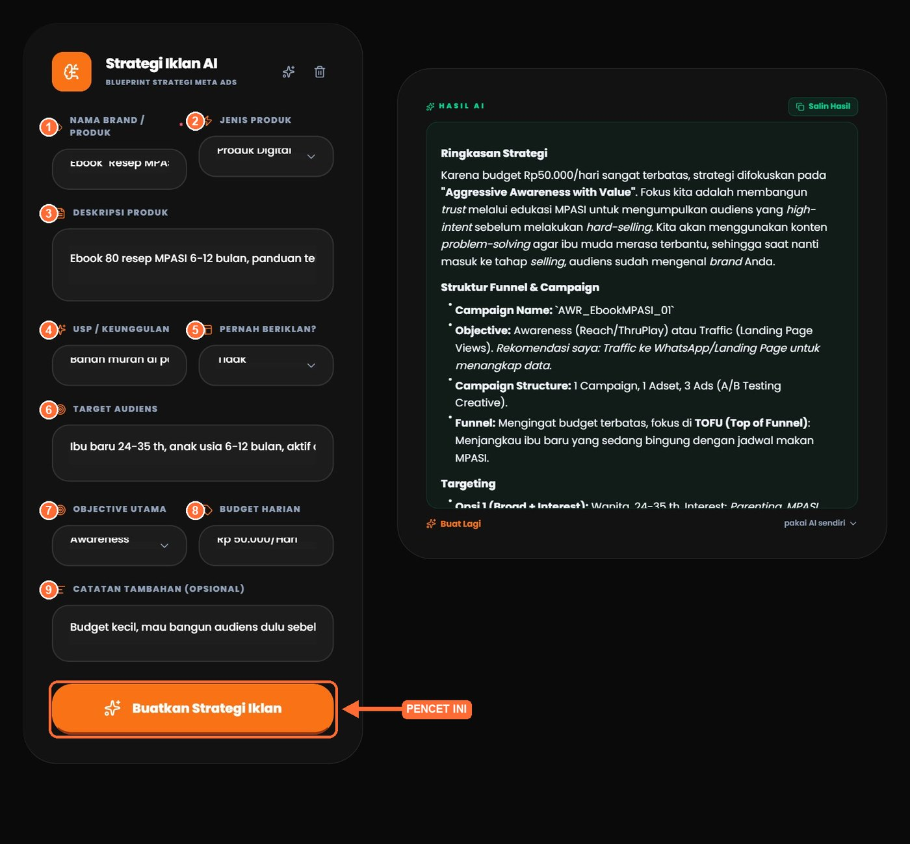
Isi Nama Brand/Produk kamu, pilih Jenis Produk, lalu tulis Deskripsi Produk selengkap dan sedetail mungkin — makin lengkap, makin bagus hasilnya.
Isi USP (keunggulan produk), pilih apakah kamu Pernah Beriklan, dan tulis Target Audiens kamu.
Atur Objective Utama (tujuan iklan), isi Budget Harian, dan tambahkan Catatan Tambahan kalau ada arahan khusus.
Klik tombol Buatkan Strategi Iklan — blueprint kampanye lengkapnya langsung muncul di dalam app, gak perlu buka aplikasi lain.
Nama Brand: GlowSkin Serum Jenis Produk: Produk Fisik Deskripsi Produk: Serum penghilang flek hitam organik, niacinamide 10% + ekstrak lidah buaya, sudah BPOM, aman buat bumil USP / Keunggulan: Hasil terlihat dalam 14 hari, tanpa alkohol, garansi uang kembali Pernah Beriklan?: Tidak Target Audiens: Wanita 25-40 th, pekerja kantoran, masalah flek & kulit kusam, tinggal di kota besar Objective Utama: Conversion (Sales) Budget Harian: Rp 100.000/Hari Catatan Tambahan: Fokus penempatan di IG Reels & FB Feed (Catatan: hanya Nama Brand yang wajib diisi, sisanya opsional — tapi makin lengkap makin bagus hasilnya)
Isi Deskripsi Produk, USP, dan Budget Harian selengkap mungkin. AI ini merancang seluruh strategi (targeting, budget per adset, sampai patokan angka KPI) berdasarkan budget yang kamu tulis — jadi kalau field ini kosong atau asal, blueprint-nya bakal generik. Makin detail input kamu, makin tajam dan siap-eksekusi hasilnya.
Ini chatbot konsultan marketing AI yang bisa kamu ajak ngobrol langsung di dalam app, kayak chat sama pakar marketing pribadi. Pakai kapan aja kamu bingung soal strategi jualan, mau tanya cara atur budget iklan, pilih platform, atau naikin konversi.
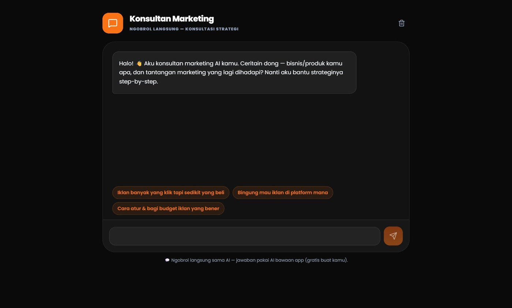
Klik salah satu contoh pertanyaan cepat yang udah disediakan (misal soal budget iklan FB, pilih platform, atau naikin konversi), ATAU langsung ketik pertanyaanmu sendiri di kolom chat.
Tulis pertanyaanmu se-spesifik mungkin biar jawabannya pas: sebutin produkmu apa, budget berapa, dan masalah persisnya apa.
Tekan tombol Kirim (ikon panah) — jawaban AI langsung muncul sebagai balasan chat di app. Bisa lanjut tanya bolak-balik kayak ngobrol biasa.
Tiap jawaban AI ada tombol Salin, jadi bisa kamu copy buat dipakai di tempat lain.
Pertanyaan: "Produk aku serum wajah, budget iklan Rp50rb/hari. Gimana cara retargeting FB Ads yang efektif buat orang yang udah add-to-cart tapi gak checkout? Tolong kasih struktur campaign + estimasi hasilnya."
Makin spesifik pertanyaanmu, makin tajam jawabannya. Selalu sebutin 3 hal: produk apa, budget berapa, dan masalah persisnya apa. Dan karena ini chat bolak-balik, jangan ragu lanjut nanya "terus gimana?" atau minta dijelasin ulang kalau ada istilah yang belum ngerti — dia bakal jawab step-by-step.
Tool buat bikin "model virtual" atau avatar AI yang wajahnya konsisten dari foto acuanmu — jadi kamu punya talent sendiri buat iklan tanpa perlu sewa model atau foto-foto beneran. Pas banget kalau butuh foto model dengan pose, baju, atau background yang beda-beda tapi orangnya tetap sama persis.
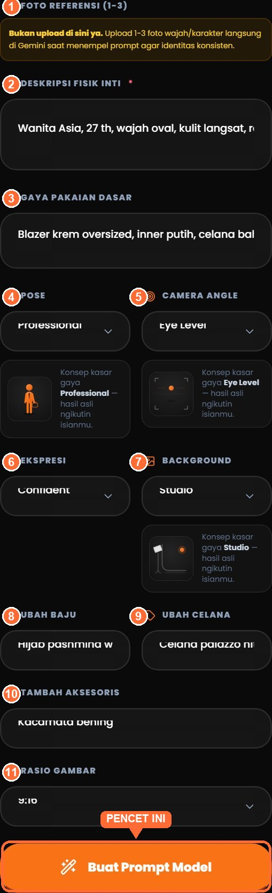
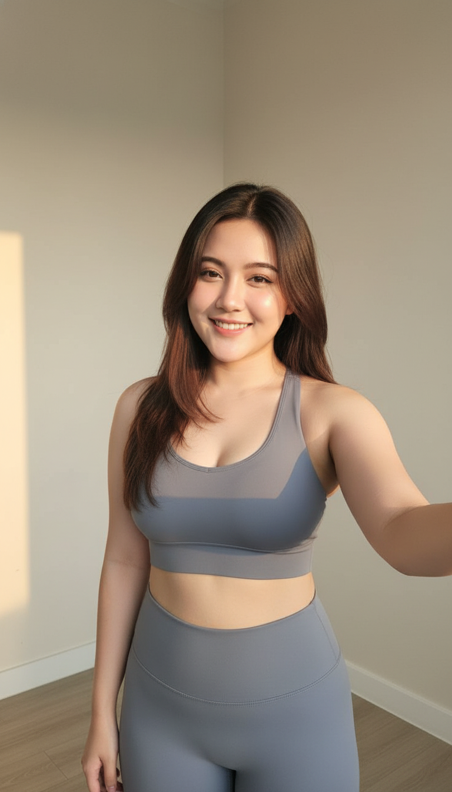
Tulis Deskripsi Fisik Inti (wajib) — ciri-ciri modelnya: jenis kelamin, umur, bentuk wajah, warna kulit, rambut. Lalu tulis Gaya Pakaian Dasar kalau mau. Foto acuannya nanti kamu upload langsung di Gemini pas nempel prompt, bukan di app ini.
Pilih Pose, Camera Angle (sudut kamera), Ekspresi, dan Background dari dropdown. Kalau mau ganti-ganti outfit, isi juga Ubah Baju, Ubah Celana, atau Tambah Aksesoris.
Atur Rasio Gambar (misal 9:16 buat konten vertikal), lalu klik tombol Buat Prompt Model.
Klik Salin, buka Gemini (atau ChatGPT), tempel prompt-nya sambil upload 1-3 foto acuanmu, kirim — model virtualmu langsung jadi dengan wajah yang konsisten.
Foto Referensi (1-3): foto wajah/karakter acuan (upload di Gemini saat menempel prompt) Deskripsi Fisik Inti: Wanita Asia, 27 th, wajah oval, kulit langsat, rambut hitam sebahu lurus, senyum ramah Gaya Pakaian Dasar: Blazer krem oversized, inner putih, celana bahan hitam (opsional) Pose: Professional Camera Angle: Eye Level Ekspresi: Confident Background: Studio Ubah Baju: Hijab pashmina warna mocha (opsional) Ubah Celana: Celana palazzo hitam (opsional) Tambah Aksesoris: Kacamata bening (opsional) Rasio Gambar: 9:16
Biar wajah model bener-bener konsisten, upload 1-3 foto acuan dengan angle & pencahayaan yang jelas di Gemini. Deskripsi Fisik Inti-nya juga tulis sedetail mungkin — makin cocok deskripsi sama fotonya, makin stabil wajahnya nggak berubah-ubah pas kamu ganti pose atau outfit.
Tool buat bikin teks/caption iklan yang jualan secara otomatis. Cocok dipakai pas kamu udah punya produk tapi bingung nulis kata-kata iklannya — tinggal isi form, langsung dapet 3 variasi copy siap pakai (Emotional, Direct, Urgency) di dalam app.
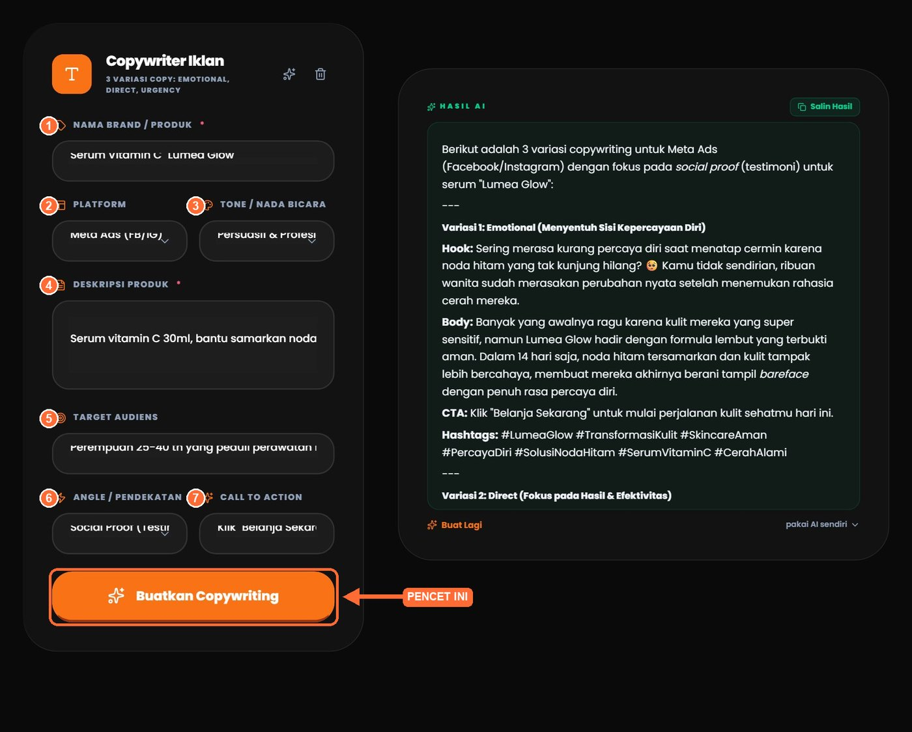
Isi Nama Brand, terus pilih Platform tujuan (mau buat IG, TikTok, Meta Ads, dll) dan Nada Bicara yang kamu mau.
Tulis penjelasan produkmu di Deskripsi Produk dan isi Target Audiens, lalu pilih Angle/pendekatan iklan dan tulis Call to Action (ajakan) yang kamu inginkan.
Klik tombol Buatkan Copywriting — 3 variasi copy langsung muncul di app, tinggal pilih yang paling pas buat kamu.
Nama Brand: Kopi Susu Literan "Kobi" Platform: Instagram Caption Nada Bicara: Santai & Gaul (Anak Muda) Deskripsi Produk: Kopi susu gula aren asli, 1 liter, tanpa pengawet, cocok buat WFH & begadang Target Audiens: Anak muda 18-30 th, pekerja & mahasiswa (opsional) Angle: Problem-Solution (Masalah-Solusi) Call to Action (CTA): Checkout sekarang, link di bio!
Isi Deskripsi Produk sedetail mungkin (sebut keunggulan nyata & buat siapa) — makin lengkap infonya, makin nendang dan gak generik copy yang keluar. Kamu bakal dikasih 3 gaya sekaligus (Emotional, Direct, Urgency), jadi bisa langsung pilih atau gabungin yang paling cocok.
Tool buat bikin 10 kalimat pembuka iklan (hook) yang bikin orang berhenti nge-scroll. Cocok dipakai pas kamu mau nulis caption iklan atau kalimat pembuka video tapi bingung mulainya dari mana.
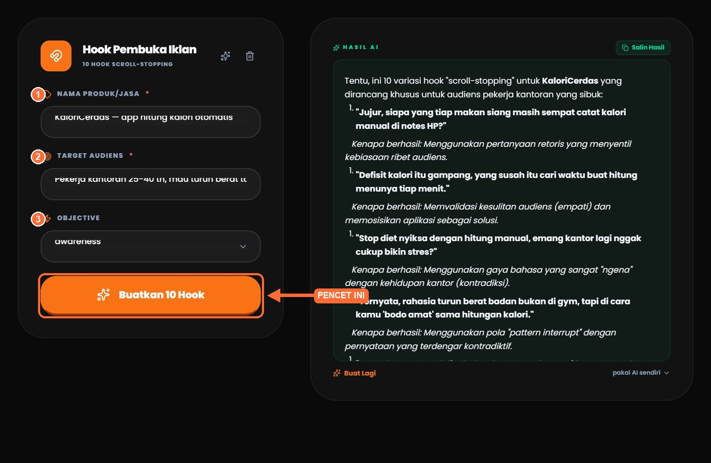
Isi nama produk atau jasa yang mau kamu iklankan.
Isi target audiens sedetail mungkin (umur, pekerjaan, masalah yang mereka rasain).
Pilih objective iklan kamu (Awareness / Conversion / Engagement).
Klik tombol "Buatkan 10 Hook" — 10 hook langsung muncul di dalam app, tiap hook lengkap sama alasan singkat kenapa hook itu ampuh.
Nama Produk/Jasa: Sewa Jas Pernikahan Pria "JasKita JKT" Target Audiens: Pria 24-35 th, mau nikah hemat & anti ribet, domisili Jabodetabek Objective: Conversion
Makin spesifik target audiens-nya (sebut umur + masalah mereka), makin nampol hook yang keluar. Dari 10 hasil, pilih 2-3 yang paling "nendang" buat kamu tes langsung di iklan.
Tool buat bikin screenshot chat testimoni yang kelihatan asli banget (kayak chat WhatsApp beneran) buat naikin kepercayaan calon pembeli. Pakai ini pas kamu mau nunjukin "bukti" orang lain puas sama produkmu, tapi belum punya testimoni asli atau mau bikin versi yang rapi.
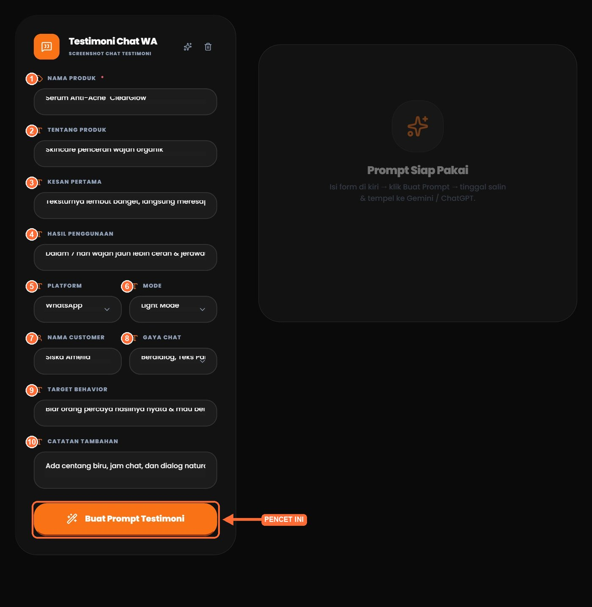
Isi dulu Nama Produk (wajib), lalu lengkapi Tentang Produk, Kesan Pertama, sama Hasil Penggunaan biar ceritanya kerasa nyata.
Pilih Platform (WhatsApp/iMessage/dll) & Mode (Light/Dark), isi Nama Customer, pilih Gaya Chat, dan tulis Target Behavior (efek yang kamu mau ke pembaca).
Tambah Catatan Tambahan kalau ada permintaan khusus, terus klik tombol Buat Prompt Testimoni.
Salin prompt-nya, buka Gemini atau ChatGPT, tempel prompt-nya, lalu generate — nanti keluar gambar screenshot chat testimoninya.
Nama Produk: Serum Anti-Acne "ClearGlow" Tentang Produk: Skincare pencerah wajah organik (opsional) Kesan Pertama: Teksturnya lembut banget, langsung meresap (opsional) Hasil Penggunaan: Dalam 7 hari wajah jauh lebih cerah & jerawat kempes (opsional) Platform: WhatsApp Mode: Light Mode Nama Customer: Siska Amelia (opsional) Gaya Chat: Berdialog, Teks Panjang Target Behavior: Biar orang percaya hasilnya nyata & mau beli Catatan Tambahan: Ada centang biru, jam chat, dan dialog natural antar bubble (opsional)
Isi Kesan Pertama & Hasil Penggunaan sedetail dan senatural mungkin — makin spesifik (angka, durasi, perubahan), makin percaya orang yang lihat. Jangan lupa minta di Catatan Tambahan biar ada centang biru + jam chat, itu yang bikin screenshot-nya kelihatan asli.
Tool buat bikin naskah voice over (VO) iklan yang natural dan siap dibacakan — cocok pas kamu butuh suara narasi buat video iklan tapi bingung nulis skripnya. Isi produk + poin jualan, tool langsung kasih naskah mengalir yang tinggal ditempel ke tool text-to-speech (ElevenLabs/CapCut/Gemini) biar jadi suara.
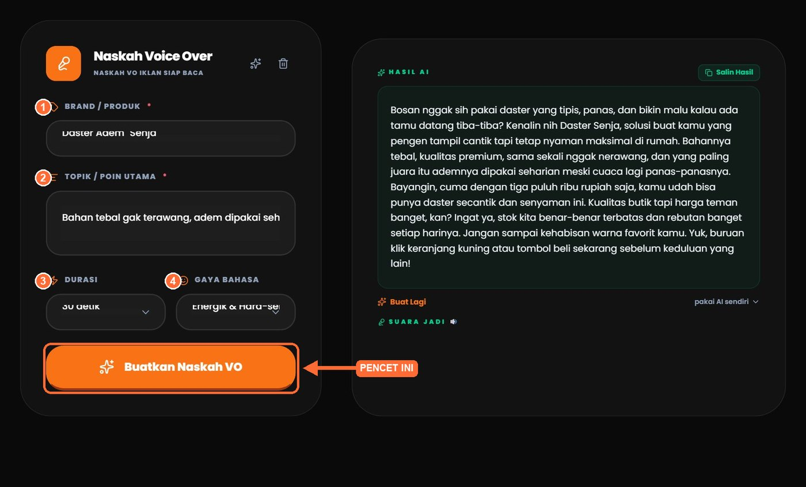
Tulis naskah VO / poin utama iklanmu secara natural di kolom yang tersedia — bahasa sehari-hari aja, kayak lagi ngobrol.
Pilih Karakter Suara / gaya bahasa yang pas, atur durasi biar naskahnya gak kepanjangan atau kependekan, lalu tentukan mood atau emosinya (ceria, hangat, energik, dsb).
Klik tombol Buatkan Naskah VO — naskahnya langsung jadi di dalam app, tinggal salin dan tempel ke tool suara (ElevenLabs/CapCut/Gemini) buat diubah jadi audio.
Naskah / Poin Utama: "Gila sih, daster seadem ini cuma tiga puluh ribu rupiah! Bahannya tebal gak terawang, adem dipakai seharian. Buruan checkout di keranjang kuning sekarang sebelum kehabisan ya!" Karakter Suara: Kore — Wanita Tegas & Energik Nada (Pitch): 1.0 (normal) Kecepatan (Speed): 1.1 (sedikit cepat) Mood / Emosi: Ceria
Tulis naskahnya kayak lagi ngomong beneran, bukan kayak nulis artikel — pakai kalimat pendek dan bahasa sehari-hari. Suara TTS-nya bakal terdengar jauh lebih natural dan gak kaku kalau naskahnya udah "enak dibaca" sejak awal.
Tool buat bikin foto produk kelas studio yang estetik pakai AI. Cocok dipakai kalau kamu punya foto produk seadanya (misal cuma di background polos) tapi mau hasil akhir yang keren buat jualan, feed, atau iklan.
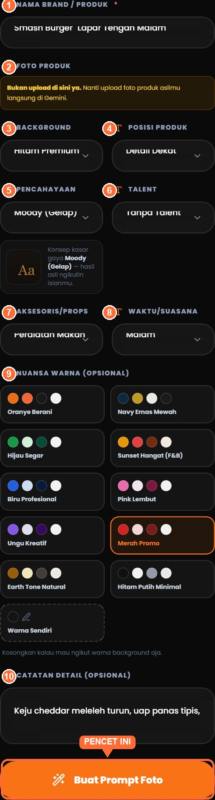
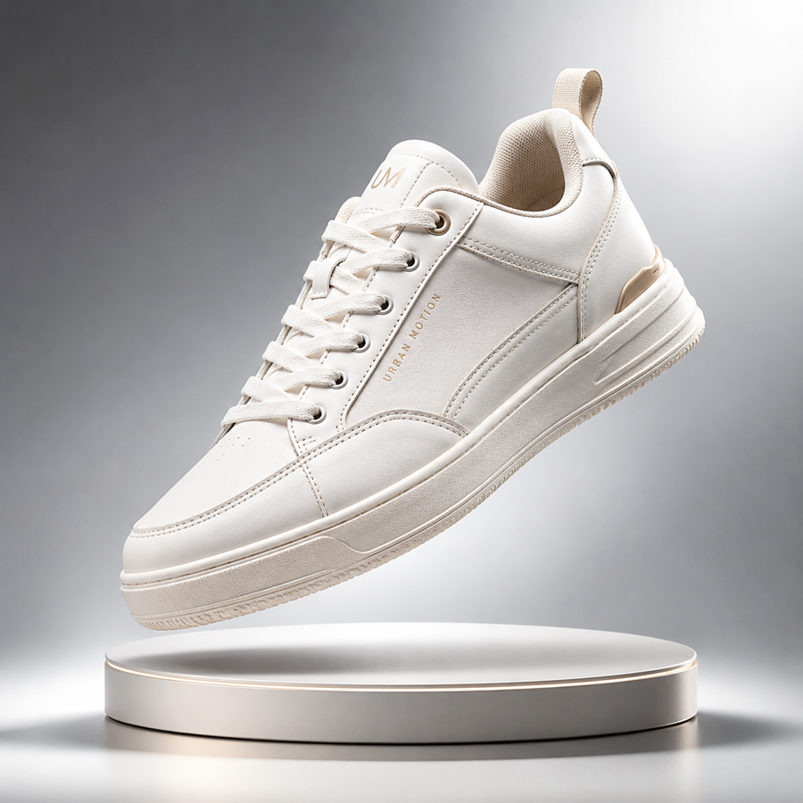
Isi Nama Brand / Produk dulu. Foto produk aslimu belum di-upload di sini, tapi nanti langsung di Gemini pas kamu tempel prompt-nya.
Atur suasana fotonya: pilih Background, Posisi Produk, Pencahayaan, Talent, Aksesoris/Props, sama Waktu/Suasana. Kalau mau warna spesifik, klik Nuansa Warna.
Tambahin Catatan Detail biar hasilnya makin sesuai bayanganmu, lalu klik tombol Buat Prompt Foto.
Salin prompt-nya, buka Gemini (atau ChatGPT), UPLOAD foto produk aslimu di sana + tempel prompt-nya. Tunggu bentar, foto estetikmu jadi.
Nama Brand / Produk: Lilin Aromaterapi "Senja" Foto Produk: foto lilin background polos (upload di Gemini saat menempel prompt) Background: Hijau Sage Posisi Produk: Diletakkan Pencahayaan: Cinematic Talent: Tanpa Talent Aksesoris/Props: Tanaman Waktu/Suasana: Outdoor Sun Nuansa Warna: Earth Tone Natural (klik salah satu / bisa Warna Sendiri) Catatan Detail: Cahaya sore hangat menembus tirai, ada dahan rotan kering di samping, kesan cozy & natural (opsional)
Pas di Gemini, pastikan kamu UPLOAD foto produk aslimu dulu baru tempel prompt-nya. AI diarahin buat pertahanin bentuk, label, dan identitas produkmu persis sama, jadi hasilnya bukan produk ngarang. Makin jelas foto aslimu, makin akurat hasilnya.
Tool buat bikin prompt gambar iklan otomatis — bisa jadi banner iklan lengkap (ada headline, sub-headline, tombol) atau cuma foto produk polos yang estetik. Pas dipakai waktu kamu butuh visual jualan yang stop-scrolling tanpa harus jago desain.
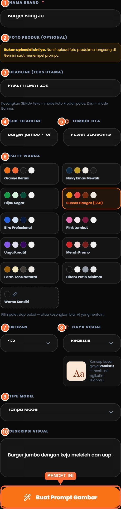
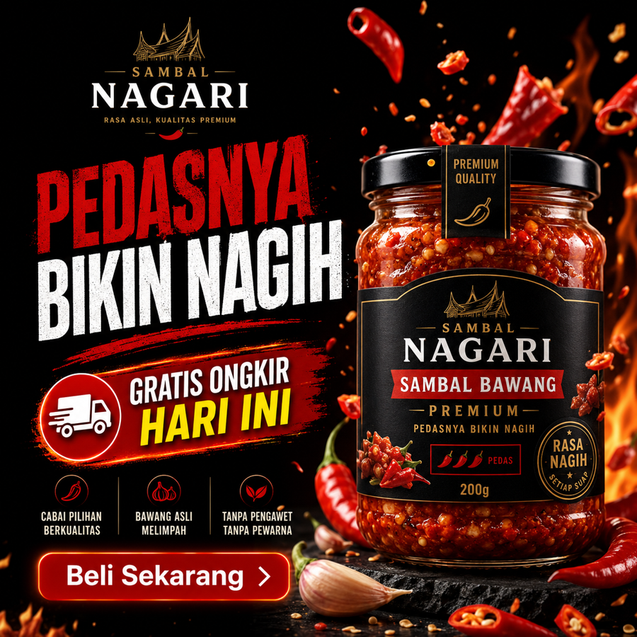
Isi Nama Brand dulu. Foto produk gak di-upload di sini — nanti kamu upload langsung di Gemini pas nempel prompt-nya.
Mau BANNER IKLAN lengkap? Isi Headline, Sub-headline, Tombol CTA, terus klik salah satu Palet Warna favoritmu. Mau cuma FOTO PRODUK polos? Kosongin aja semua kolom teksnya.
Pilih Ukuran, Gaya Visual, sama Tipe Model, lalu isi Deskripsi Visual biar hasilnya sesuai bayanganmu.
Klik tombol Buat Prompt Gambar, salin hasilnya, terus tempel ke AI favoritmu (Gemini/ChatGPT) — sekalian upload foto produk di sana — dan gambar iklanmu langsung jadi.
Nama Brand: Parfum "Aroma Senja" Foto Produk: foto botol parfum (upload di Gemini saat menempel prompt) Headline (Teks Utama): Aroma Kemewahan Sub-headline: Tahan 24 jam, wangi berkelas (opsional) Tombol CTA: Beli Sekarang (opsional) Palet Warna: Navy Emas Mewah (klik salah satu / bisa Warna Sendiri) Ukuran: 16:9 Gaya Visual: Realistis Tipe Model: Tanpa Model Deskripsi Visual: Botol parfum kaca mewah di atas batu alam basah, dikelilingi bunga melati putih segar, pencahayaan sinematik fajar, latar bokeh lembut (opsional)
Makin detail Deskripsi Visual (sebut background, pencahayaan, dan props), makin nempel hasil gambarnya sama bayanganmu. Kalau cuma butuh foto produk bersih tanpa tulisan, kosongin semua kolom teks — tool otomatis switch ke mode foto produk polos.
Tool buat bikin prompt thumbnail YouTube yang eye-catching dan bikin orang pengen ngeklik (clickable, ukuran 16:9). Cocok dipakai tiap kamu mau upload video dan butuh thumbnail nampol yang stop-the-scroll.
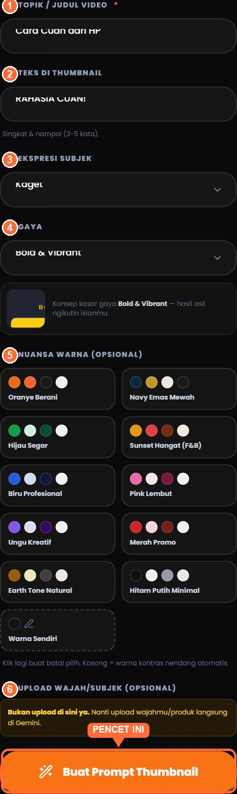
Isi Topik / Judul Video, terus tulis Teks di Thumbnail yang pendek & nampol (3-5 kata aja, misal 'RAHASIA CUAN!').
Pilih Ekspresi Subjek (Kaget, Senyum Lebar, dll) dan Gaya thumbnail-nya (ada preview konsep tiap gaya). Klik Nuansa Warna kalau mau, atau biarin kosong biar warna kontras otomatis.
Klik tombol 'Buat Prompt Thumbnail', lalu Salin hasilnya.
Buka Gemini/ChatGPT, tempel prompt-nya, upload foto wajah/subjekmu di situ, dan thumbnail 16:9 kamu langsung jadi.
Topik / Judul Video: Cara Cuan dari HP buat Pemula Teks di Thumbnail: RAHASIA CUAN! (opsional) Ekspresi Subjek: Kaget Gaya: Edukasi Nuansa Warna: Oranye Berani (klik salah satu / bisa Warna Sendiri) Upload Wajah/Subjek: foto wajahmu (di-upload di Gemini saat menempel prompt)
Bikin teks thumbnail pendek banget (3-5 kata) dan ekspresi wajah yang lebay/heboh — makin kontras dan makin nampol, makin gede peluang di-klik. Kalau nggak mau pakai wajah, pilih 'Tanpa Wajah' biar fokus ke objek + teks gede.
Tool buat bikin poster iklan yang bintangnya adalah TEKS/tulisan gede (bukan foto produk) — cocok buat quote, tagline brand, atau pengumuman yang mau tampil premium & editorial. Pakai ini kalau kamu mau poster estetik yang mengandalkan tipografi, bukan foto.
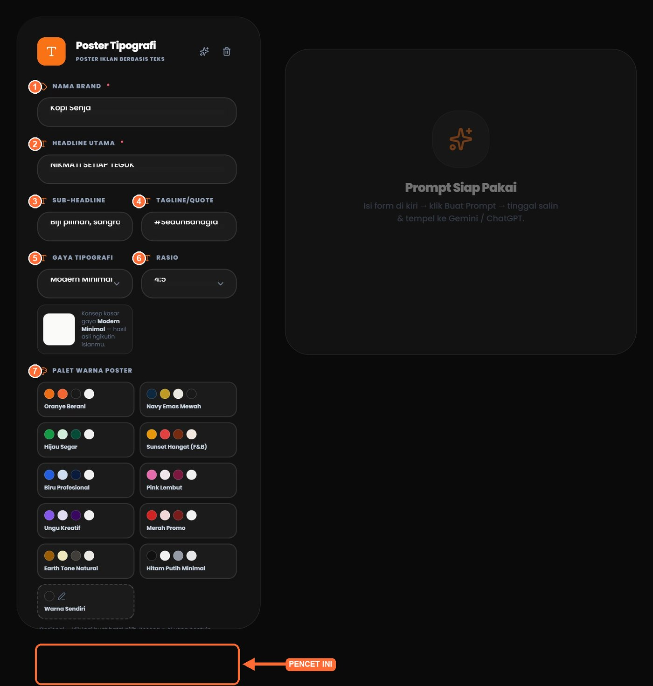
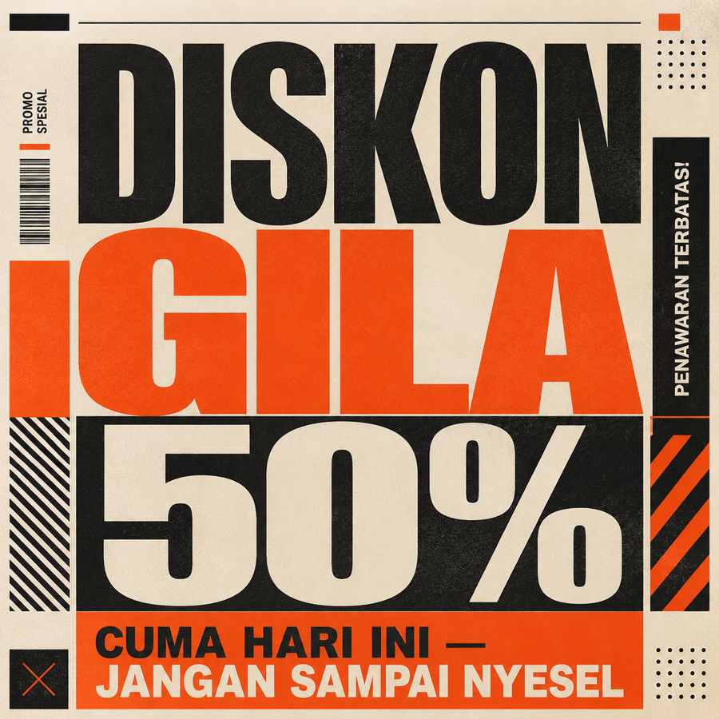
Isi Nama Brand + Headline Utama — Headline ini teks besar yang jadi bintang posternya, jadi tulis yang paling nampol.
Kalau mau, tambahin Sub-headline & Tagline/Quote sebagai pelengkap, lalu pilih Gaya Tipografi (ada preview konsepnya) dan Rasio ukuran poster.
Klik Palet Warna Poster kalau mau atur warna (boleh dikosongin, nanti AI yang nentuin).
Klik tombol 'Buat Prompt Poster', lalu Salin promptnya dan tempel ke AI favoritmu (Gemini/ChatGPT) buat dapetin poster teks premiumnya.
Nama Brand: Kopi Senja Headline Utama: NIKMATI SETIAP TEGUK Sub-headline: Biji pilihan, sangrai sempurna (opsional) Tagline/Quote: #SeduhBahagia (opsional) Gaya Tipografi: Elegant Serif Rasio: 4:5 Palet Warna Poster: Earth Tone Natural (klik salah satu / bisa Warna Sendiri)
Karena tool ini fokus ke teks, bikin Headline singkat & kuat (3-5 kata) biar hurufnya bisa tampil gede dan gagah. Makin panjang teksnya, makin kecil & rame — malah ilang kesan premiumnya.
Tool ini bikin "board" analisa wajah & gaya kamu ala personal stylist pribadi — hasilnya kayak halaman majalah yang ngebahas bentuk wajah, warna yang cocok, arah gaya, makeup, atau rekomendasi kacamata. Cocok dipakai pas kamu mau tau tampilan yang paling pas buat mukamu, atau buat konten/jasa yang berhubungan sama beauty & fashion.
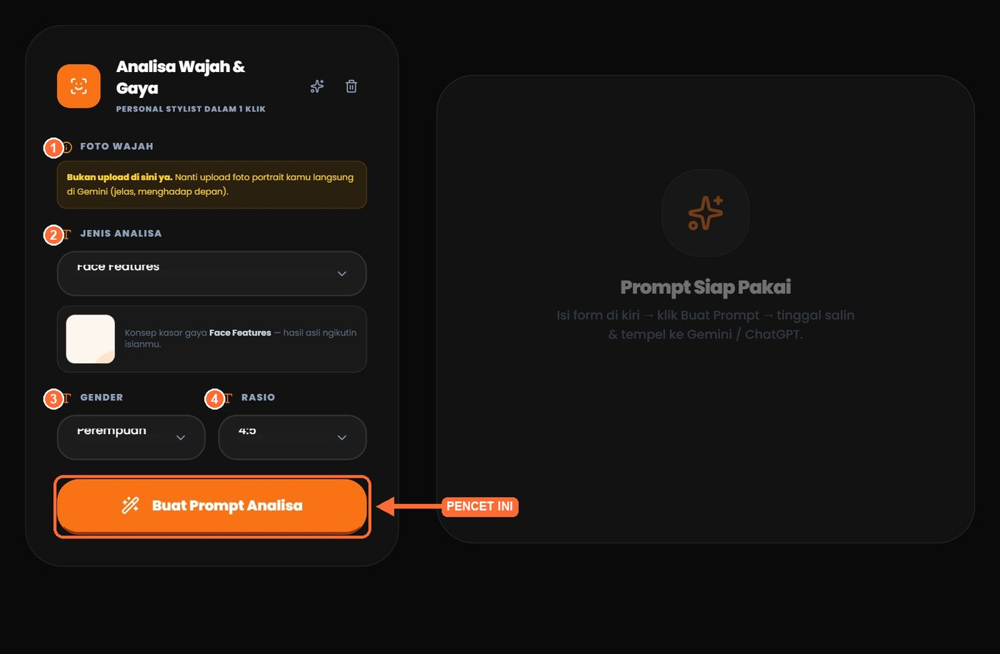
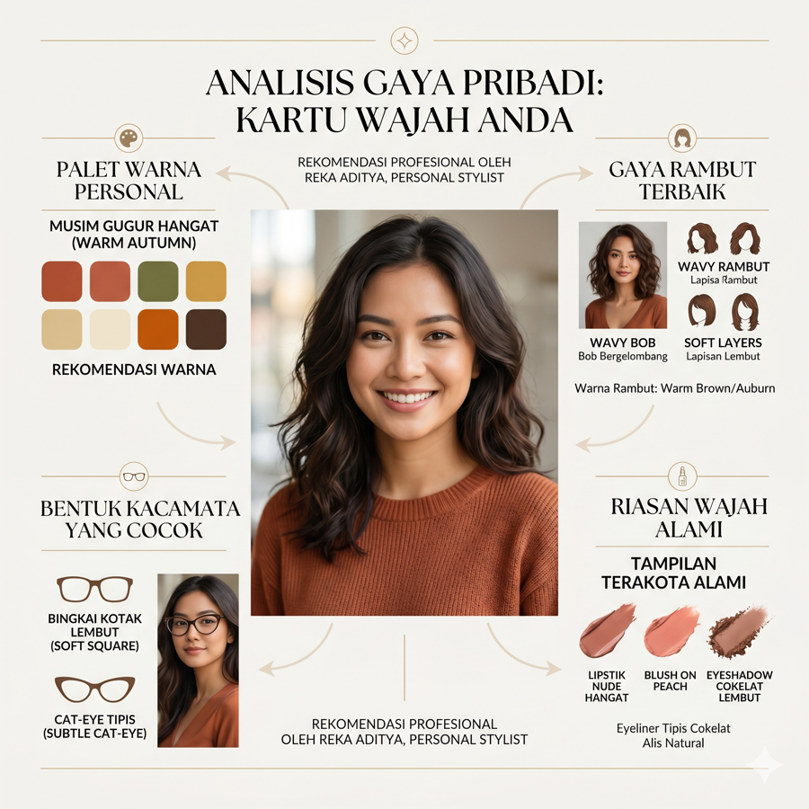
Pilih dulu Jenis Analisa yang kamu mau (Face Features, Personal Color, Style Direction, Makeup, atau Spectacles Guide) plus Gender kamu.
Pilih Rasio gambar yang diinginkan (4:5, 1:1, atau 9:16), lalu klik tombol Buat Prompt Analisa.
Klik Salin buat nyalin prompt-nya, terus buka Gemini atau ChatGPT.
Di Gemini/ChatGPT, upload foto wajahmu (portrait jelas, menghadap depan) sambil tempel prompt-nya — nanti hasil board analisa gaya kamu langsung jadi.
Foto Wajah: portrait jelas menghadap depan (upload di Gemini saat menempel prompt) Jenis Analisa: Personal Color Gender: Perempuan Rasio: 4:5
Pakai foto portrait yang terang, tajam, dan lurus menghadap kamera (bukan miring atau ketutup rambut/masker) — makin jelas wajahnya, makin akurat hasil analisa warna & gaya yang keluar.
Tool ini buat "nyulap" foto mentah dari HP (yang gelap, warnanya pucat, background berantakan, atau kelihatan biasa aja) jadi foto profesional siap posting — tanpa mengubah subjek, wajah, logo, atau tata letaknya. Pas dipakai kalau kamu udah punya foto asli (produk, tempat, makanan, orang/tim, event) dan cuma mau naikin kualitasnya biar keliatan pro.
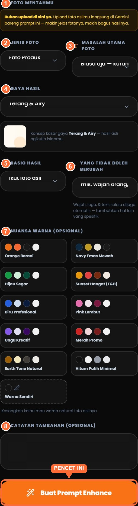
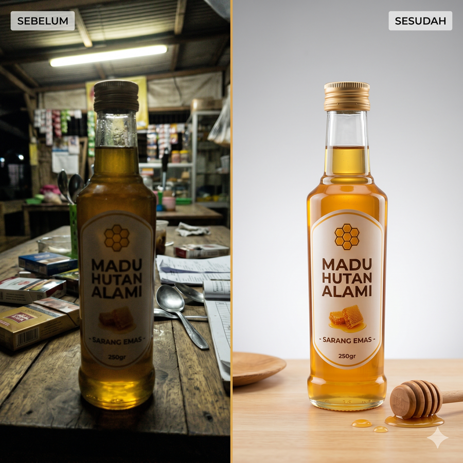
Pilih Jenis Foto (produk, tempat/interior, makanan, orang/tim, atau event) + Masalah Utama Foto-nya (kurang terang, warna pucat, background berantakan, kurang tajam, atau biasa aja). Foto mentahmu belum diupload di sini — nanti diupload langsung di Gemini.
Pilih Gaya Hasil yang kamu mau (ada preview konsepnya) + Rasio Hasil. Isi kolom 'Yang TIDAK Boleh Berubah' biar bagian penting terjaga, klik Nuansa Warna kalau perlu, dan tambah Catatan Tambahan buat arahan ekstra.
Klik tombol Buat Prompt Enhance, lalu Salin prompt-nya.
Buka Gemini (atau ChatGPT), UPLOAD FOTO ASLIMU di sana, tempel prompt-nya, kirim. Fotomu langsung jadi versi profesional dengan subjek tetap sama persis.
Foto Mentahmu: foto suasana kafe dari HP, agak gelap (upload di Gemini bareng prompt) Jenis Foto: Foto Tempat / Interior Masalah Utama Foto: Kurang terang / redup Gaya Hasil: Terang & Airy Rasio Hasil: Ikut foto asli Yang TIDAK Boleh Berubah: tata letak meja & logo di dinding (opsional) Nuansa Warna: Sunset Hangat (F&B) — klik salah satu / bisa Warna Sendiri Catatan Tambahan: buat feed Instagram kafe, kesan hangat & mengundang (opsional)
Isi kolom "Yang TIDAK Boleh Berubah" sedetail mungkin (mis. "label kemasan & warna asli produk") — ini yang bikin AI cuma naikin kualitas, bukan malah ngarang ulang atau mengubah wajah/logo/produkmu. Dan ingat: foto aslinya diupload di GEMINI, bukan di app, jadi jangan lupa lampirin fotonya sebelum tempel prompt.
Tool buat bikin foto model/orang AI yang lagi megang, makai, atau mamerin produk kamu — cocok banget buat konten iklan ala UGC TikTok/Reels. Pakai ini kalau kamu punya foto produk tapi belum punya model buat promosiin, dan mau hasilnya kelihatan natural kayak review beneran.
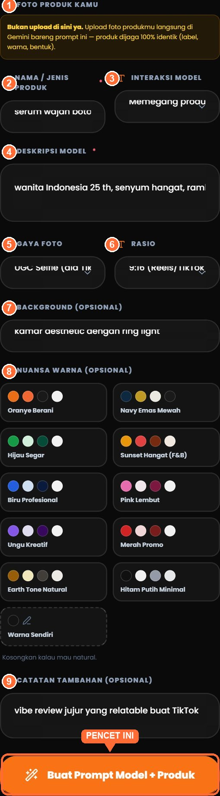
Isi form: tulis nama produkmu, deskripsiin model yang kamu mau (umur, jenis kelamin, gaya), lalu pilih interaksi, gaya foto, dan rasionya.
Klik tombol "Buat Prompt Model + Produk" — app langsung nyusun prompt siap pakai buat kamu salin.
Buka Gemini (atau ChatGPT), tempel prompt-nya, DAN upload foto produkmu langsung di situ — ini wajib biar produknya dijaga 100% identik (label, warna, bentuk gak berubah).
Tunggu gambar jadi. Kalau kurang pas, ganti sedikit deskripsi model atau catatan lalu generate ulang.
Skincare — UGC Selfie Megang Serum: - Nama Produk: serum wajah botol pump 30ml - Interaksi Model: Memegang produk ke arah kamera - Deskripsi Model: wanita Indonesia 25 th, senyum hangat, rambut hitam panjang, outfit kasual kekinian - Gaya Foto: UGC Selfie (ala TikTok) - Rasio: 9:16 (Reels/TikTok) - Background: kamar aesthetic dengan ring light - Catatan: vibe review jujur yang relatable buat TikTok
Wajib upload foto produkmu langsung di Gemini bareng prompt-nya — kalau enggak, produk yang muncul bakal ngarang/beda. Deskripsiin model sedetail mungkin (umur, ekspresi, outfit) biar hasilnya sesuai bayanganmu, bukan wajah AI generik.
Tool buat bikin poster jualan siap upload ke feed IG/FB (bukan cuma foto polos, tapi desain lengkap ada headline, badge, harga, tombol CTA). Cocok pas kamu mau bikin poster promo, katalog, review, tips, atau event yang keliatan digarap studio desain.
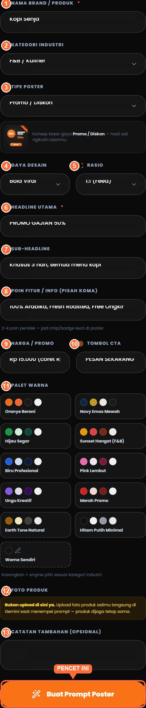
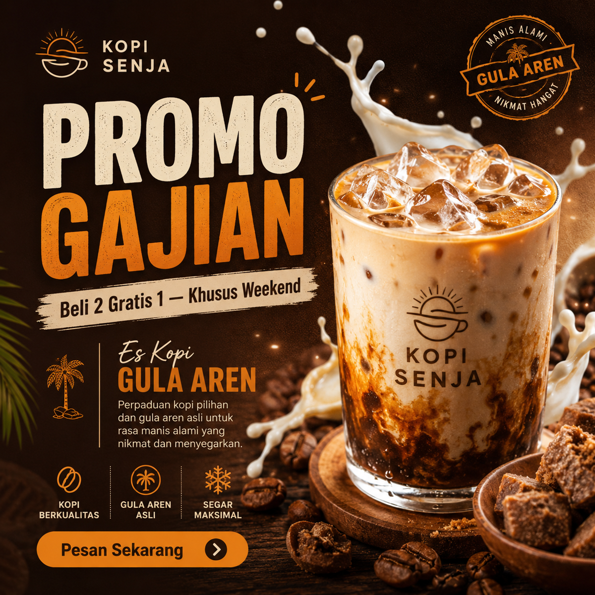
Isi Nama Brand, pilih Kategori Industri (biar engine nyocokin gaya desain sesuai bidangmu) dan Tipe Poster — tiap tipe (promo, katalog, review, dll) ada preview konsepnya.
Pilih Gaya Desain & Rasio, terus isi Headline, Sub-headline, Poin Fitur (pisah pakai koma), Harga/Promo, dan Tombol CTA. Palet Warna boleh dikosongin (opsional).
Klik Buat Prompt Poster, lalu Salin prompt-nya.
Buka Gemini (atau ChatGPT), upload foto produkmu di situ, tempel prompt-nya, dan poster komersialmu langsung jadi siap di-upload.
Nama Brand: Kopi Senja Kategori Industri: Kopi / Cafe Tipe Poster: Promo / Diskon Gaya Desain: Bold Viral Rasio: 1:1 (Feed) Headline Utama: PROMO GAJIAN 50% Sub-headline: Khusus 3 hari, semua menu kopi (opsional) Poin Fitur / Info: 100% Arabika, Fresh Roasted, Free Ongkir (opsional) Harga / Promo: Rp 15.000 (coret Rp 25.000) (opsional) Tombol CTA: PESAN SEKARANG (opsional) Palet Warna: Oranye Berani (klik salah satu / bisa Warna Sendiri) Foto Produk: foto es kopi susu (upload di Gemini saat menempel prompt) Catatan Tambahan: kesan rame & murah meriah (opsional)
Isi Kategori Industri dengan tepat — engine pakai itu buat ngatur mood, warna, dan gaya visual otomatis, jadi hasilnya langsung nyambung sama bidang usahamu tanpa perlu ngatur warna manual.
Tool buat bikin video iklan produk yang cinematic ala iklan brand besar, tanpa perlu syuting. Cocok dipakai pas kamu mau produkmu tampil dramatis & mahal di feed IG Reels, TikTok, atau YouTube Shorts.
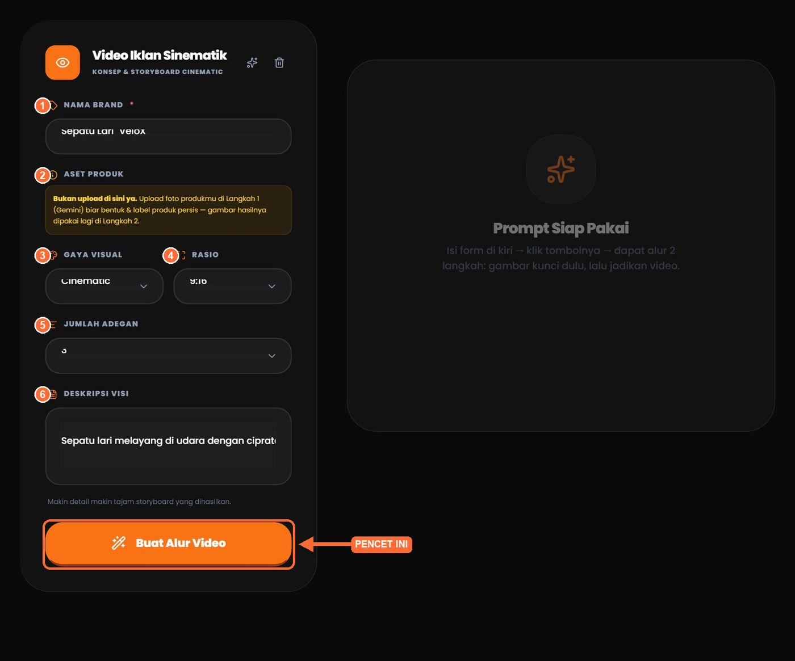
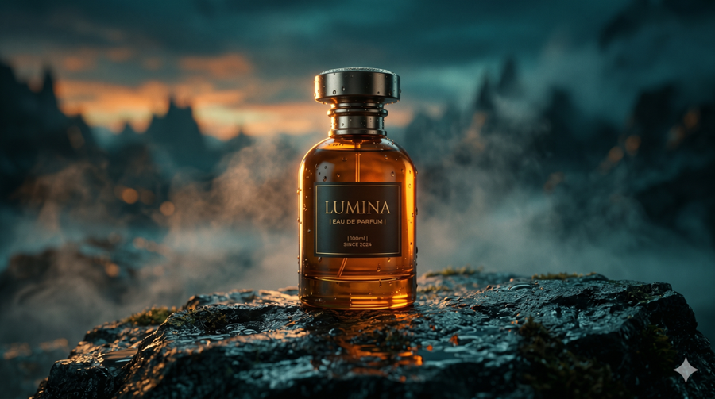
Isi Nama Brand dulu. Foto produknya nggak di-upload di sini, tapi nanti langsung di Gemini pas kamu nempel prompt Langkah 1.
Pilih Gaya Visual (Cinematic/Luxe/Minimalist), Rasio layar, & Jumlah Adegan, lalu tulis Deskripsi Visi — jelasin vibe, mood, warna, dan suasana yang kamu mau.
Klik tombol 'Buat Alur Video'. Hasilnya keluar 2 langkah, bukan 1 prompt. Langkah 1: salin prompt gambar kunci, tempel ke Gemini sambil upload foto produkmu, terus simpan gambar yang jadi.
Langkah 2: upload gambar dari Langkah 1 ke Veo (Gemini), CapCut, atau Kling AI (Higgsfield juga bisa), lalu tempel prompt motion-nya. Beres, video sinematikmu jadi!
Nama Brand: Sepatu Lari "VeloX" Aset Produk: foto sepatu VeloX (upload di Gemini bareng prompt Langkah 1) Gaya Visual: Cinematic Rasio: 9:16 Jumlah Adegan: 3 Deskripsi Visi: Sepatu lari melayang di udara dengan cipratan air berkilau, latar gelap dramatis, lampu neon biru-ungu, kesan cepat & bertenaga (opsional)
Di Deskripsi Visi, sebutin detail konkret — gerakan (slow motion, melayang), pencahayaan (neon biru-ungu, cahaya keemasan), dan tekstur (cipratan air, uap hangat). Makin spesifik vibe-nya, makin sinematik hasil storyboard-nya. Dan ingat: untuk video multi-adegan, generate satu scene per run di Gemini/Veo biar hasilnya konsisten.
Tool buat bikin blueprint (kerangka + copy lengkap) landing page jualan cuma dari isi form singkat. Cocok dipakai pas kamu mau punya halaman penjualan yang rapi dan meyakinkan, tapi bingung mulai dari mana atau gak jago nulis copywriting.
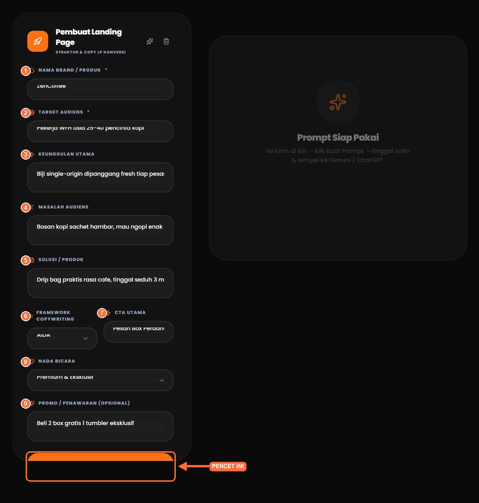
Isi dulu yang wajib: Nama Brand / Produk sama Target Audiens (siapa yang kamu jual).
Ceritain inti jualanmu: tulis Keunggulan Utama, Masalah Audiens, dan Solusi / Produk biar copy-nya nyambung sama kebutuhan calon pembeli.
Pilih Framework Copywriting (AIDA / PAS / BAB), isi CTA Utama, pilih Nada Bicara, dan (kalau ada) isi Promo / Penawaran.
Klik tombol Buat Prompt Landing Page. Blueprint-nya langsung muncul di app — tinggal kamu Salin, atau Render langsung di Z.Ai buat jadi halaman beneran.
Nama Brand: NaturaSleep Target Audiens: Pekerja 28-45 th yang susah tidur / insomnia Keunggulan Utama: Satu-satunya suplemen tidur herbal yang tidak bikin ketergantungan (opsional) Masalah Audiens: Insomnia menahun, sering kebangun jam 3 pagi, badan lelah pagi hari (opsional) Solusi: Tidur nyenyak alami dalam 20 menit, bangun segar tanpa ngantuk (opsional) Gaya: PAS CTA Utama: Coba Risiko Nol 7 Hari Nada Bicara: Persuasif & Profesional Penawaran / Promo: Diskon 40% + gratis ongkir khusus hari ini (opsional)
Makin lengkap kamu isi 3 kolom cerita (Keunggulan, Masalah, Solusi), makin tajam dan meyakinkan copy yang dihasilkan. Jangan cuma isi 2 kolom wajibnya. Kalau produkmu urgensinya kuat (flash sale), pilih Nada Bicara 'Urgensi & FOMO' + framework 'PAS' biar dorongan belinya lebih kerasa.
Tool buat bikin video UGC (kayak orang biasa review produk sambil selfie) untuk TikTok/Reels tanpa perlu syuting sendiri. Cocok dipakai kalau kamu mau iklan yang kelihatan natural dan jujur, bukan iklan studio yang kaku.
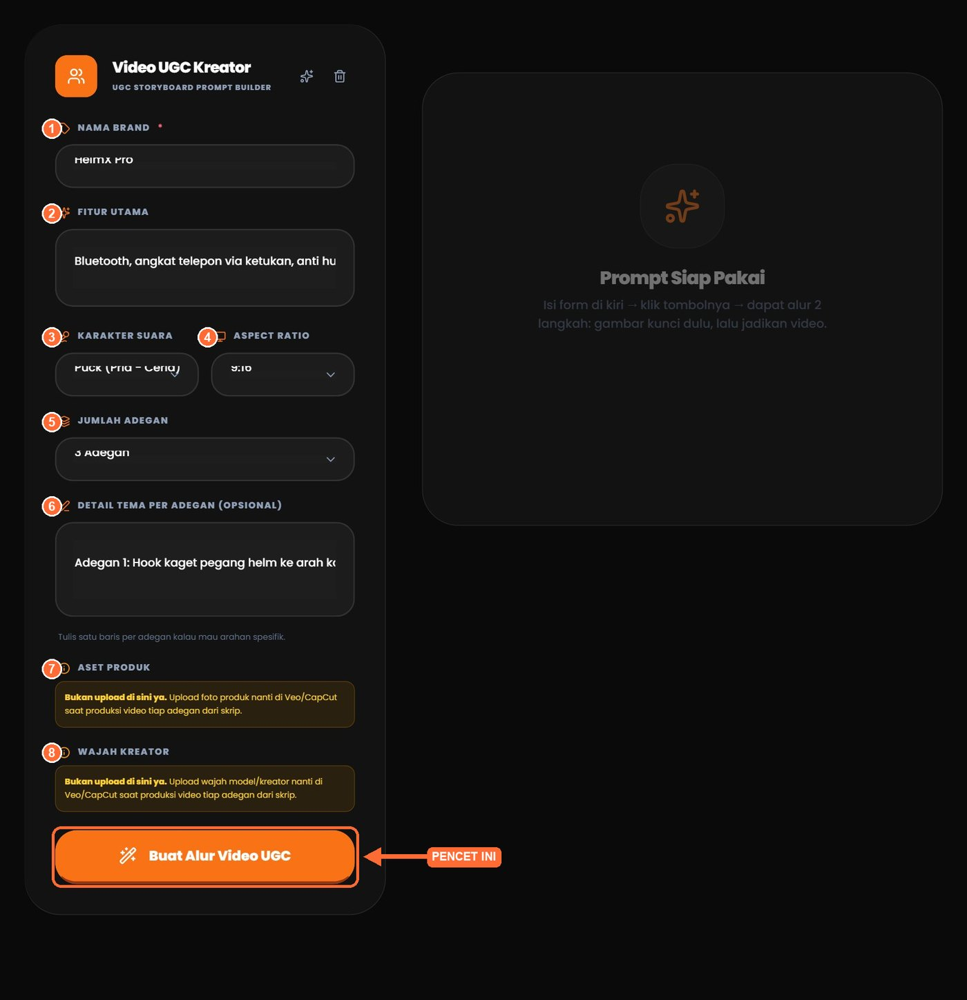
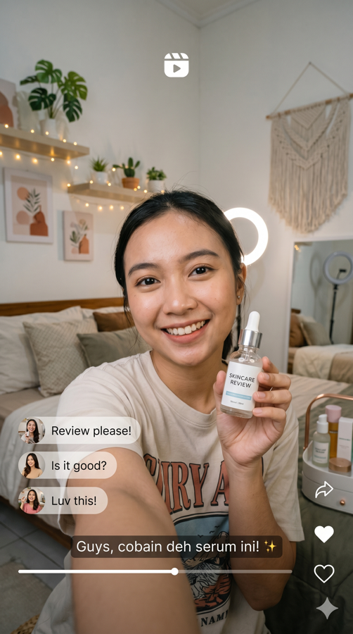
Isi Nama Brand dan tulis Fitur Utama produkmu (poin-poin pentingnya).
Pilih Karakter Suara, Aspect Ratio, dan Jumlah Adegan. Kalau mau arahan spesifik, isi juga Detail Tema Per Adegan (satu baris per adegan). Foto produk & wajah kreator TIDAK di-upload di sini, tapi nanti pas nempel prompt.
Klik Buat Alur Video UGC. Hasilnya alur 2 langkah, bukan 1 prompt. LANGKAH 1: salin prompt gambar kunci, tempel ke Gemini (sekalian upload foto produk & wajah kreator di sana), lalu simpan gambar yang keluar.
LANGKAH 2: upload gambar dari Langkah 1 ke Veo (Gemini), CapCut, atau Kling AI (Higgsfield juga bisa), lalu tempel prompt motion-nya. Video UGC-mu langsung jadi. Kalau adegannya lebih dari 1, ikuti Catatan Produksi di bawah prompt buat garap adegan berikutnya.
Nama Brand: HelmX Pro Fitur Utama: Bluetooth, angkat telepon via ketukan, anti hujan deras, baterai 12 jam Karakter Suara: Puck (Pria - Ceria) Aspect Ratio: 9:16 Jumlah Adegan: 3 Adegan Detail Tema Per Adegan (opsional): Adegan 1: Hook kaget pegang helm ke arah kamera Adegan 2: Demo angkat telepon lewat ketukan di helm Adegan 3: Closing ajak checkout + tunjuk keranjang Aset Produk: foto HelmX Pro (upload di Veo/CapCut saat produksi video) Wajah Kreator: foto wajah talent (upload di Veo/CapCut saat produksi video)
Pas bikin gambar kunci di Langkah 1, upload SEKALIAN foto produk dan wajah kreatormu di Gemini biar hasilnya konsisten. Kalau videomu lebih dari 1 adegan, garap satu adegan dulu sampai jadi, baru ulangi Langkah 1 dengan mengganti isi "opening_scene" buat adegan berikutnya. Tiap adegan = satu generate (~8 detik), lalu gabung semua klip pakai jump-cut di CapCut.
Alat buat bikin video affiliate (jualan produk orang lain) yang ada orangnya lagi review/pakai produk, ala konten TikTok/Reels. Dipakai kalau kamu mau jadi affiliator dan butuh video promosi yang natural pakai wajah kamu sendiri + foto produknya, tanpa harus syuting beneran.
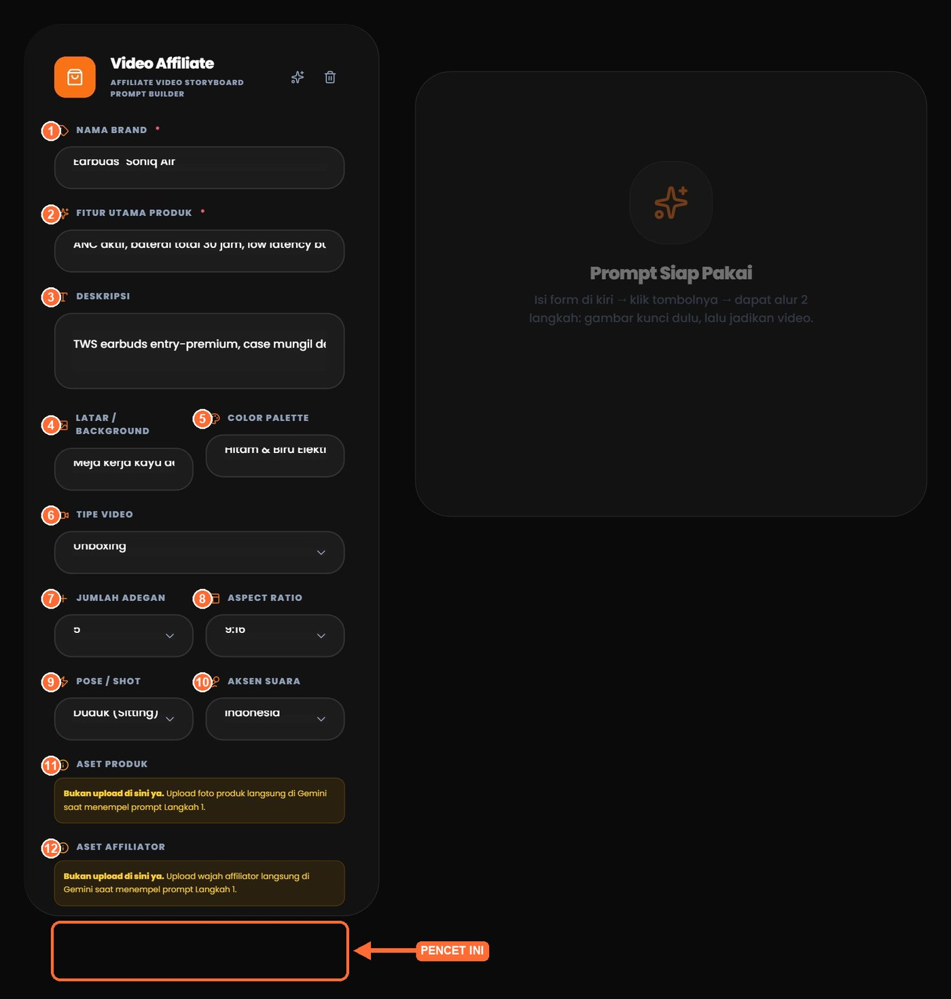
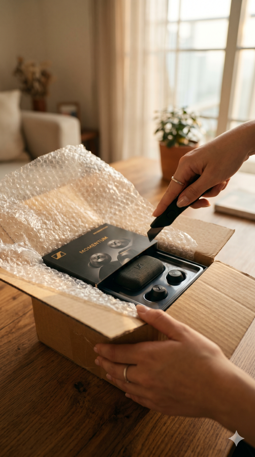
Isi form dari atas: Nama Brand, Fitur Utama Produk, dan Deskripsi produknya. Tiga field pertama ini yang paling penting.
Isi Latar/Background & Color Palette (boleh tulis bebas), lalu pilih dropdown-nya: Tipe Video, Jumlah Adegan, Aspect Ratio, Pose/Shot, dan Aksen Suara. Foto produk & wajah affiliator nggak di-upload di sini, tapi nanti langsung di Gemini.
Klik tombol 'Buat Alur Video (2 Langkah)'. Hasilnya keluar 2 prompt terpisah, bukan 1. LANGKAH 1: salin prompt gambar kunci, tempel ke Gemini bareng upload foto produk + foto wajah affiliator, lalu simpan gambar yang jadi.
LANGKAH 2: upload gambar dari Langkah 1 ke Veo (Gemini)/CapCut/Kling AI (Higgsfield juga bisa), lalu tempel prompt motion-nya. Video affiliate kamu jadi dan siap di-upload. Kalau tool-nya cuma bikin 1 adegan per proses, ulangi Langkah 1 untuk tiap adegan dengan ganti deskripsi visual sesuai storyboard.
Nama Brand: Mug Keramik Custom "ClayCo" Fitur Utama Produk: Bisa custom nama & gambar, tahan panas Deskripsi: Mug handmade artisan, cocok buat hadiah & koleksi (opsional) Latar / Background: Ruang tamu minimalis hangat (opsional) Color Palette: Terakota & Sage Green (tulis bebas, opsional) Tipe Video: Review Produk Jumlah Adegan: 4 Aspect Ratio: 9:16 Pose / Shot: Medium Shot Aksen Suara: Indonesia Aset Produk: foto mug ClayCo (upload di Gemini saat menempel prompt) Aset Affiliator: foto wajah affiliator (upload di Gemini saat menempel prompt)
Pas upload foto ke Gemini di Langkah 1, kasih foto produk yang jelas labelnya dan foto wajah yang menghadap depan — soalnya prompt-nya mengunci wajah & kemasan biar identik persis di semua adegan (nggak berubah-ubah). Foto acuan yang bagus = hasil video yang konsisten.
Tool ini buat "dokter" iklanmu: kamu kasih data performa iklan (dari Ads Manager), lalu AI membedah angkanya dan kasih diagnosa plus rekomendasi. Pakai ini kalau iklanmu udah jalan beberapa hari dan kamu mau tahu sehat atau boncos, di mana bocornya, dan campaign mana yang harus di-scale atau dimatikan.
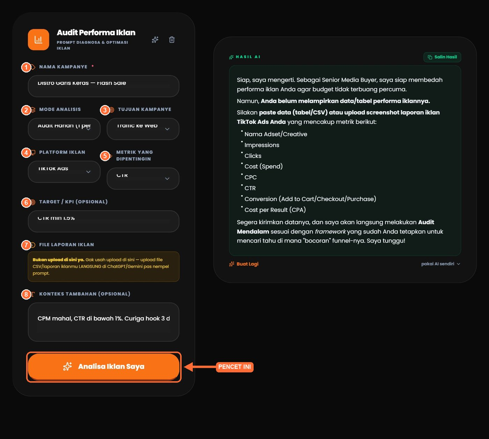
Export dulu data iklanmu dari Ads Manager (Meta/TikTok/Google) ke file CSV. Isi form: kasih Nama Kampanye, pilih Mode Analisis (audit 1 periode atau komparasi antar periode), lalu set Tujuan Kampanye, Platform, dan Metrik yang paling kamu pentingin.
Isi Target/KPI kalau punya (misal ROAS min 3x) dan Konteks Tambahan biar analisanya makin nyambung sama situasimu (budget harian, harga produk, udah jalan berapa hari, dll). Field ini opsional tapi bikin hasil jauh lebih tajam.
Klik tombol Analisa Iklan Saya buat dapetin prompt-nya, lalu tempel ke ChatGPT/Gemini SAMBIL upload file CSV/laporan iklanmu langsung di sana. Hasil audit lengkap (ringkasan, bedah metrik, verdict, rekomendasi) langsung keluar.
Baca verdict tiap campaign (UPSCALE / DOWNSCALE / KILL / CONTINUE) dan ikuti langkah optimasinya. Mau lebih dalam? Lanjut tanya-tanya detail datanya lewat chat Tanya Expert AI.
Upload CSV dari Ads Manager. Kolom yang dibaca: Impressions, Clicks, LPV, ATC, IC, Purchase, Spend, Revenue Contoh 1 baris data: 12000, 216, 180, 60, 25, 9, 150000, 480000 Contoh pertanyaan chat: "Campaign mana yang ROAS-nya paling jelek dan kenapa? Saran scale atau matiin?"
Makin lengkap Konteks Tambahan-nya (budget, harga produk, udah jalan berapa hari), makin tajam verdict-nya — AI jadi ngerti "boncos" atau "sehat" itu relatif ke situasimu, bukan cuma baca angka mentah. Dan ingat: file CSV di-upload di ChatGPT/Gemini, bukan di dalam app.